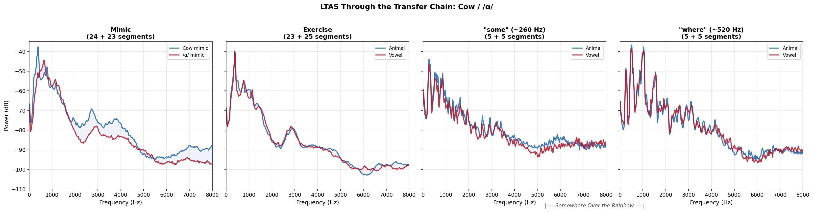

Animal and Phoneme Mimic Exercises and Singing Voice Quality
acoustic-analysis
voice-quality
vocal-exercises
MFA-2026
Abstract
This study compares vocal exercises derived from animal imitations (owl, cat, cow) with exercises derived from the corresponding vowel imitations (/u/, /ae/, /a/) to investigate how each affects singing voice quality. Five participants each completed two sessions: one animal-based, one vowel-based. Acoustic measures were extracted from mimics, exercises, and a target song (“Somewhere Over the Rainbow”) recorded at baseline and after each exercise block. Perceptual effort was rated using the Omni-VES, and post-session engagement questionnaires captured participant experience.
Three research questions structure the analysis: (1) Do animal-derived exercises differ acoustically from vowel-derived exercises, and does that difference transfer into the exercise phase and carry over into singing? (2) How do the two exercise protocols affect overall voice quality and perceived vocal effort? (3) How do participants experience and engage with each exercise protocol?
The central finding is that each animal-vowel pair works through a different acoustic mechanism: cow changes acoustic measures associated with phonation, cat changes resonance, owl changes intensity. These signatures partially transfer from mimics into exercises, and the type of exercise (not cumulative warm-up) predicts the acoustic profile of subsequent singing. Neither protocol harms voice quality. Both protocols are moderately engaging, with no meaningful difference in overall engagement between them.
This is a proof-of-concept study with five participants. Effect sizes are large but confidence intervals are wide. The findings describe these five singers and identify patterns for future replication, not generalizable claims.
RQ2: Voice Quality and Perceived Effort Outcomes
How do the two exercise protocols affect perceived vocal effort (Omni-VES) and overall voice quality (AVQI)?
Study Design
Five participants each completed two recording sessions:
- Session A (Animal): Imitate an animal sound (owl, cat, cow) → sing a derived exercise → sing “Somewhere Over the Rainbow”
- Session B (Vowel): Imitate the corresponding vowel (/u/, /æ/, /ɑ/) → sing a derived exercise → sing “Somewhere Over the Rainbow”
Three animal-vowel pairs target different vowels and vocal behaviors:
| Pair | Animal | Vowel | Approximate f0 | Primary Domain |
|---|---|---|---|---|
| Owl / /u/ | Owl hoo | /u/ | ~570 Hz | Intensity, stability |
| Cat / /æ/ | Meow | /æ/ | ~430 Hz | Resonance, spectrum |
| Cow / /ɑ/ | Moo | /ɑ/ | ~320 Hz | Phonation, registration |
Each session also included AVQI recordings (sustained vowel + continuous speech) before and after the exercise protocol, “Somewhere Over the Rainbow” at baseline and after each of the three exercise blocks, and a post-session engagement questionnaire.
Analysis Method
Acoustic measures (20): f0 mean and SD, jitter (local), shimmer (local and dB), HNR, intensity (calibrated to 94 dB reference tone), spectral moments (CoG, spectral SD, skewness, kurtosis), CPPS, H1-H2, F1, F2, alpha ratio, L/H ratio, LTAS slope and tilt, AVQI.
Spectral balance (L/H Ratio): The L/H ratio compares energy below 2000 Hz to energy above 2000 Hz (dB difference). Higher values mean more energy is concentrated in the lower frequencies; lower values mean more energy reaches the upper spectrum. The 2000 Hz boundary was chosen because the LTAS analysis revealed that the primary spectral divergence between animal and vowel mimics occurs above 2000 Hz, particularly the Cat mimic’s concentration of energy in the 2000-5000 Hz range (the perceptual “ping” or “twang” the researcher heard). The standard alpha ratio (1000 Hz boundary) missed this divergence entirely.
Extraction was performed independently by two pipelines: a Praat batch script (Ian Howell) and a parselmouth-based Python pipeline. Results were cross-validated and merged into a single dataset (394 tokens x 35 measures). An independent statistical audit verified all claims. See the Audit Report for full details.
Perceptual measure: Omni-VES (Vocal Effort Scale, 0-10), rated by the researcher for every mimic and exercise segment. Participant self-ratings provide a second perspective.
Statistical approach: Cohen’s d with bootstrapped 95% confidence intervals (10,000 draws), Spearman rank correlations for VES-acoustic relationships, linear mixed models for condition and interaction effects. Emphasis on effect sizes and patterns over p-values given n = 5. Bootstrap stability analysis categorized effects into three robustness tiers.
Baseline-corrected differential: To isolate genuine exercise effects on the song, we computed within-session shifts (post-exercise Somewhere minus baseline Somewhere) for each participant, then compared the shift magnitudes across sessions. The paired d of this differential removes any pre-existing session differences from the carry-over estimates.
Formant caveat: Formant estimation is unreliable when f0 exceeds ~350 Hz. Owl mimics (~570 Hz) and “where” targets (~520 Hz) are flagged; cat mimics (~430 Hz) are borderline; cow mimics (~320 Hz) and “some” targets (~260 Hz) are reliable. Formant-dependent findings should be interpreted with caution for high-f0 tokens.
Engagement questionnaires: Post-session Likert scales (10 items, 1-7; 3 likelihood items, 1-5) plus open-ended responses. Engagement Index is the mean of all 10 items (Q1_10 reverse-coded). Likelihood Index is the mean of the 3 future-use items. Paired Cohen’s d and paired t-tests for session comparison.
Results
RQ1: Acoustic Comparison of Traditional vs. Alternative Vocal Exercises
Do animal-derived exercises differ acoustically from vowel-derived exercises? Does that difference transfer into the exercise phase and carry over into singing?
The Transfer Chain: How Each Mimic Changes the Voice, the Exercise, and the Song
The strongest finding in this study: the three animal mimics do not all work the same way, and their effects transfer differently through the chain from mimic to exercise to song.
The heatmap below tracks within-participant paired effect sizes (Cohen’s d) across three stages. Blue = animal session produced a higher value; red = vowel session produced a higher value. Read left to right within each pair to see what persists, what fades, and what emerges. The last two columns (“some” and “where”) are not sequential steps; they are two register-specific views of the same song performance. “Some” captures the lower register (~260 Hz) and “where” captures the upper register (~520 Hz) within each “Somewhere Over the Rainbow” recording.
A note on paired d: These are within-participant comparisons where each singer serves as their own control. Paired d values are typically smaller than pooled d values (e.g., Cow HNR paired d = +2.56 vs. pooled d = +3.91) because they control for individual differences. The direction and interpretation are the same.
Reading the heatmap left to right by pair:
Owl / /u/ — Confirms the baseline. Strong mimic differences (shimmer d = -2.95, spectral SD d = -2.13, intensity d = +1.96) completely disappear by the exercise stage. No measure reaches |d| > 0.8 at exercise. The owl and /u/ prime the exercise the same way. The exercise did not move the singing much from where it started.
Cat / /æ/ — Amplifies harmonic energy. Spectral differences amplify from the mimic into the exercise. Spectral SD grows from d = +2.11 (mimic) to d = +3.71 (exercise, the single largest effect in the dataset). The meow-primed exercise has nearly 50% more spectral spread than the /æ/-primed exercise. The L/H Ratio (2 kHz split) captures this directly: d = -1.32 at mimic, d = -1.25 at exercise. The meow drives more energy into the mid and high frequency harmonics than /æ/ alone — the acoustic correlate of the “ping” and “twang” the researcher consistently heard. Carry-over to the “where” target: H1-H2 d = +2.27, shimmer d = +1.34, intensity d = -1.39.
Cow / /ɑ/ — Persists. Voice quality differences (HNR d = +2.56, shimmer d = -1.31, jitter d = -1.35) persist or strengthen at the exercise stage (shimmer d = -1.74, jitter d = -1.40) and reach the song (CPPS d = -1.88 on “some,” shimmer d = -1.19 on “where”). The cow mimic’s vocal gesture — a whole-gesture registration traversal, not a steady-state vowel — seeds a voice quality difference that is still acoustically detectable in “Somewhere Over the Rainbow.” These measures are established correlates of vocal fold vibratory regularity (Ferrand, 2002; Teixeira et al., 2013).
Three pairs, three different acoustic stories. The owl confirms the baseline. The cat amplifies harmonic energy in the mid and high frequencies. The cow persists through the transfer chain into the song.
The pedagogical implication: Not all animal mimics add value over their vowel counterparts. Cat and cow yield acoustic differences the vowel alone does not, and those patterns can reach the song. Owl does not.
A note on interpreting Cow / /ɑ/ measures
For the owl and cat mimics, each repetition is relatively steady-state. For the cow mimic and its /ɑ/ counterpart, both involve pitch glides, vowel shifts from /ɑ/ to /u/, and registration traversal. Acoustic measures for these tokens represent averages across the entire gesture. The comparison is between two different vocal gestures, not two steady-state vowels.
What survives baseline correction?
The baseline-corrected differential (figure below) asks a stricter question: did the animal exercises shift the singing voice more than the vowel exercises did, relative to each session’s own starting point? The answer sharpens the picture:
- Cow “where”: Spectral SD shows the largest baseline-corrected effect (d = -2.09), confirming that the cow exercise compressed spectral spread in the upper register more than /ɑ/ did. Shimmer (d = -0.68) also shows a differential shift.
- Cat “where”: H1-H2 (d = +1.00) and f0 (d = +1.07) survive baseline correction. The breathier, higher-pitched quality of cat-primed singing at “where” is a real exercise effect, not a pre-existing session difference.
- Cat “some”: H1-H2 shows a baseline-corrected d = -1.38 (opposite direction from “where”), suggesting the cat exercise affects the two registers differently.
- Owl: No measure exceeds |d| = 0.70 after baseline correction. The owl and /u/ exercises change the singing voice equivalently, confirming the raw heatmap’s conclusion.
Did the Exercises Change the Singing?
The baseline-corrected differential above compares the shift across sessions (animal shift minus vowel shift). The analysis below asks a simpler question: within each session independently, how much did each exercise change the singing compared to the pre-exercise baseline?
Three voice quality measures capture different dimensions of the change: - CPPS (Cepstral Peak Prominence, Smoothed): How strongly periodic the voice is. Higher = more consistent, well-organized vibration. - HNR (Harmonics-to-Noise Ratio): How much energy falls on the harmonics versus as noise. Higher = cleaner harmonic signal. - Shimmer: How steady the amplitude is cycle to cycle. Lower = more consistent phonation. (Note: for shimmer, bars going down indicate improvement.)
Blue = animal mimic session, red = vowel mimic session. Bars show the actual change in dB from the pre-exercise Somewhere baseline.
How this connects to the three-sentence story: You just heard three transfer chains that sounded very different from each other. When we measure the change from each singer’s baseline, the same three patterns emerge:
- Owl | /u/ — Confirms the baseline. The bars barely leave the zero line. The exercise didn’t change the singing much from where it started. Both owl and /u/ are gentle, baseline-confirming exercises.
- Cat — Amplifies harmonic energy. The HNR jump (1.43 dB) only shows up in the animal column. The meow drove more energy into the mid and high frequency harmonics than the vowel alone. That is what amplification means here: the meow amplified harmonic content in the upper frequencies in a way that /æ/ did not.
- Cow | /a/ — Persists. The voice quality shifts we heard carry through the transfer chain show up here as measurable changes in shimmer and periodicity across both registers. Meanwhile, /a/ produces the largest CPPS gains across both registers (+1.52 dB at C4, +1.78 dB at C5). Both exercises improve the voice, but in different ways.
Spectral Profiles Through the Chain
The LTAS (Long-Term Average Spectrum) figures show what the heatmap numbers look like acoustically. The first figure below shows the baseline Somewhere (pre-exercise) at both registers, confirming that Sessions A and B started from the same spectral profile. The three per-pair figures then show mimic, exercise, and post-exercise Somewhere. The Somewhere panels use pitch-conditioned LTAS: only the frames where the singer is in the target register contribute to the spectral average. Blue = animal session (A), red = vowel session (B).

Baseline Somewhere: Sessions A and B start from nearly identical spectral profiles at both registers. Any divergence in the post-exercise panels below represents a genuine exercise-induced shift.

Owl / /u/: spectra nearly overlap at all stages. No spectral difference survives into Somewhere at either register.

Cat / /æ/: dramatic spectral divergence at mimic, partially visible at exercise. The “where” panel shows residual difference in the song.

Cow / /ɑ/: spectral divergence at mimic and exercise. Post-exercise panels largely converge.
RQ2: Voice Quality and Perceived Effort Outcomes
How do the two exercise protocols affect overall voice quality (AVQI) and perceived vocal effort (Omni-VES)?
Researcher vs. Participant VES: Who Perceives More Effort?
When comparing animal mimics to their vowel counterparts, the researcher and participants tell different stories:
| Pair | Researcher (animal, vowel) | Participant (animal, vowel) |
|---|---|---|
| Owl | 2.0, 3.2 | 2.0, 2.6 |
| Cat | 3.6, 4.8 | 3.9, 3.2 |
| Cow | 4.6, 5.5 | 4.5, 4.9 |
The researcher consistently rated vowel mimics as more effortful than animal mimics across all three pairs. The participants did not always agree: for Cat, participants rated the animal mimic (meow) as more effortful than the vowel (/æ/), flipping the researcher’s direction entirely.
A possible explanation: the researcher is rating what she observes about vocal effort and ease of production. The singers may be rating overall task difficulty, which includes the novelty and unfamiliarity of the animal mimics. The meow feels “harder” to the singer not because it is vocally more effortful, but because it is a less familiar vocal gesture.

AVQI Pre/Post
The Acoustic Voice Quality Index (AVQI) was measured from sustained vowel + continuous speech recordings before and after each session. Neither protocol harms overall voice quality.
AVQI values are stable or slightly improved pre-to-post in both conditions. No participant shows a clinically meaningful worsening. This means neither the animal nor the vowel exercise protocol introduces vocal strain or degradation at the whole-voice level — an important baseline finding even if AVQI is too blunt an instrument to capture the fine-grained acoustic shifts documented above.
Note: P4 Session B (Vowel) post-AVQI was not available.
Limitations
- Sample size (n = 5): Effect sizes are unstable, confidence intervals wide. Findings describe these five singers, not a generalizable population.
- Session order: All participants completed Session A (animal) before Session B (vowel). Exercise order within each session was randomized. Because condition and session are confounded, observed differences could partly reflect familiarity with the protocol rather than the exercise type. However, the baseline-corrected analysis shows that pre-exercise singing was acoustically equivalent across sessions, indicating that the two sessions began from the same vocal starting point.
- Formant reliability: Unreliable at f0 > 350 Hz. Owl mimics (~570 Hz) and “where” targets (~520 Hz) are flagged; formant-dependent findings should be interpreted with caution for high-f0 tokens.
- Single rater: VES rated by one researcher without inter-rater reliability assessment.
- VES scale comprehension (P5): Participant 5 reported difficulty interpreting the Omni-VES numerical rating system, noting that the pictorial anchors provided more clarity. The researcher’s own VES ratings for P5 were consistently higher than P5’s self-ratings, suggesting possible underreporting of perceived effort due to scale confusion.
- Missing AVQI data (P4 Session B): The post-session AVQI recording (sustained vowel and continuous speech) was not collected for Participant 4 in Session B. All other pre/post AVQI recordings are complete and show stable voice quality across conditions.
- Carry-over analysis: Exercise-type effects on subsequent singing are descriptive (n = 5 per group, no inferential tests reach significance). They suggest hypotheses for replication, not confirmatory claims.
- Engagement questionnaire design: Session A included two animal-specific open-ended questions that Session B did not. The Likert items were identical across sessions.
Acknowledgments
Acoustic extraction was performed by Ian Howell using a Praat plugin he developed with Claude (Anthropic). Analysis pipeline, visualization, and archival were developed collaboratively with Claude under the direction of Kayla Gautereaux. All analytical decisions were made by the research team. Statistical analysis and visualization used Python (pandas, scipy, plotly).